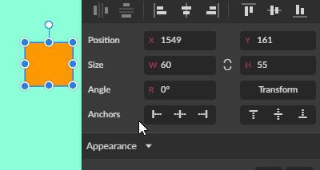

Moving objects
You must select an object before you can move it. Then you can drag them to a new position. As move an object, an outline of the objects appears and follows your mouse pointer. Release the mouse button to place the object.

If multiple objects are selected, drag directly onto one of the selected objects.
Hold down to constrain movement to vertical, horizontal, or 45 degrees directions.
If you hold down while dragging, a copy of the object is created and moved.
Alternatively, you can move the selected object with Arrow keys ( ) Holding down increases the distance of the movement by ten times.
You can always type new X and Y coordinates at the top of the Inspector panel.
Rotating objects
You must select an object with the Pointer tool before you can rotate it. To rotate the selected object, use the rotation handle on top of the bounding box rectangle.
Alternatively, move the cursor close to one of the corner handles of the selection box. Keep the cursor outside the selected rectangle. The cursor changes when the selection can be rotated.
Hold down to constrain the rotation to 15-degree increments.
Alternatively, specific rotation values can be typed in the Inspector panel.
 You can use toolbar buttons to quickly rotate objects at 90° left or right (clockwise or counterclockwise). Clicking offers even more preset rotation options (45°, 90°, 180° in both directions).
You can use toolbar buttons to quickly rotate objects at 90° left or right (clockwise or counterclockwise). Clicking offers even more preset rotation options (45°, 90°, 180° in both directions).
Scale or resize objects
You must select an object with the Pointer tool before you can scale or resize it. Drag a corner handle of the selection box to resize the selected object.
You can resize vertically and horizontally, which can cause distortion. To resize proportionally, hold dwon while dragging a selection handle. Proportional resizing keeps the same aspect ratio, so there is no distortion when resizing. Alternatively, use the Inspector panel to link height and width by clicking the Keep Ratio icon so that resizing is automatically proportional.

Hold down to resize from the center.
Hold down + for both proportional and centered resizing.
Flipping objects
You must select an object with the Pointer tool before you can flip it. You can flip horizontally or vertically using the toolbar buttons or clicking (or )
Flip commands use the center of the object’s bounding box as a mirror axis.


For information about more advanced mirror-like transformations, see Advanced transform panel.
Smart duplicate
You must select an object with the Pointer tool before you can duplicate it. If you duplicate an object and then transform it (rotate, scale, and so on) pressing + repeats this transformation.

Power Tip: You can click and drag over any numeric field (scrub) to quickly change the values. Hold down to increase values by 10 or for .1 increments.

You can disable scrubbing in the settings dialog.